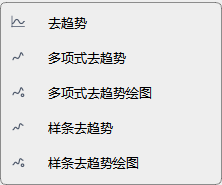
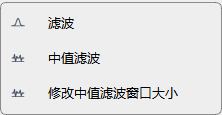

预处理
预处理的作用是把「原始计数」变成「可分析的波形」。顺序很重要，做反了结果会失真， 而且往往看起来「差不多」，不容易发现。
推荐顺序
标准流程
- 去脉冲（有尖峰时）—— 数据 › 去脉冲并绘图
- 去趋势 —— 去掉直流偏置和线性漂移
- 去均值 —— 去趋势后仍有偏置时补做
- 滤波 —— 带通 / 低通 / 高通
- 去仪器响应 —— 把计数换成物理单位（详见下一章）
先滤波再去趋势是常见的错误做法：滤波器的瞬态响应会被去趋势当成漂移的一部分再扣掉一次， 低频段幅度会被系统性压低。
去趋势

菜单：数据 › 预处理 › 去趋势。
| 菜单项 | 做法 | 适用 |
|---|---|---|
| 去趋势 | 默认方式，去掉线性趋势 | 大多数情况 |
| 多项式去趋势 | 拟合 n 阶多项式后减去 | 存在明显弯曲漂移（如温度漂移） |
| 多项式去趋势绘图 | 同上，但会先画对比图再确认 | 不确定阶数时先用它试 |
| 样条去趋势 | 样条拟合基线后减去 | 漂移形状不规则 |
| 样条去趋势绘图 | 同上，带对比图 | 同上 |
| 自定义去趋势 | 手工指定参数 | 前几种都不理想时 |
这是立即执行的命令
去趋势没有参数对话框，点了就作用于**当前选中事件**并立刻重绘。结果不满意用
编辑 里的撤销回到上一步——每一步处理都会进撤销栈。
滤波

菜单：数据 › 滤波。
| 菜单项 | 说明 |
|---|---|
| 滤波 | 带通滤波，参数在「选项」面板里设默认值 |
| 中值滤波 | 抑制孤立尖峰，对脉冲噪声有效 |
| 修改中值滤波窗口大小 | 调整中值滤波的窗口（默认 3 点） |
滤波上限不能超过奈奎斯特频率
奈奎斯特频率 = 采样率 / 2。月震数据采样率 6.625 Hz，上限就是 3.3125 Hz。
超过这个值的截止频率没有物理意义，只会得到空结果或报错。具体数值可以在
「数据全览」的诊断信息里直接读到。
怎么选通带
| 目的 | 建议 |
|---|---|
| 压制长周期漂移 | 高通 0.05–0.2 Hz |
| 压制高频噪声 | 低通 1–2 Hz（月震数据） |
| 突出月震体波 | 带通 0.5–2 Hz |
| 分析背景噪声 | 带通 0.1–1 Hz，配合 PSD |
参数没有通用最优值，判断依据是处理前后的频谱对比，而不是波形看起来是否「干净」。
加窗
数据 › 加窗，提供汉明、汉宁、布莱克曼、矩形、巴特利特、平顶六种窗。
加窗只影响频谱分析的边缘效应，不改变时域波形。做 FFT 之前加窗能显著减少频谱泄漏； 如果只是看波形，不需要加窗。
数据 › 加窗 › 绘制窗函数 可以先把窗函数画出来对比形状， 再决定用哪一个。
其他预处理项
| 菜单项 | 作用 |
|---|---|
| 去均值 | 减去均值，消除直流偏置 |
| 单位转换 | 计数与物理单位之间换算 |
| 归一化 / 自定义归一化 | 按最大值或指定范围归一 |
| 标准化 | 减均值除标准差 |
| 平滑 | 移动平均类平滑 |
| 共轭 / 反转 | 复数共轭、幅值取反 |
| 输出运行模式 | 选择处理结果的输出方式 |
| ATT 时间矫正 | 阿波罗数据的时间标记矫正 |
常见问题
处理完波形变成一条直线？ 多半是滤波通带设错（上下限反了，或上限超过奈奎斯特频率）。先撤销，再看数据全览里的采样率。
提示「没有数据」？ 处理命令作用于事件列表里选中的事件。没选中时它会尝试作用于当前工作流，而那个是空的。
处理后原始数据被改了吗？ 内存里的 Stream 会被改，磁盘上的原始文件不会。想留底用 文件 › 保存数据 另存一份。